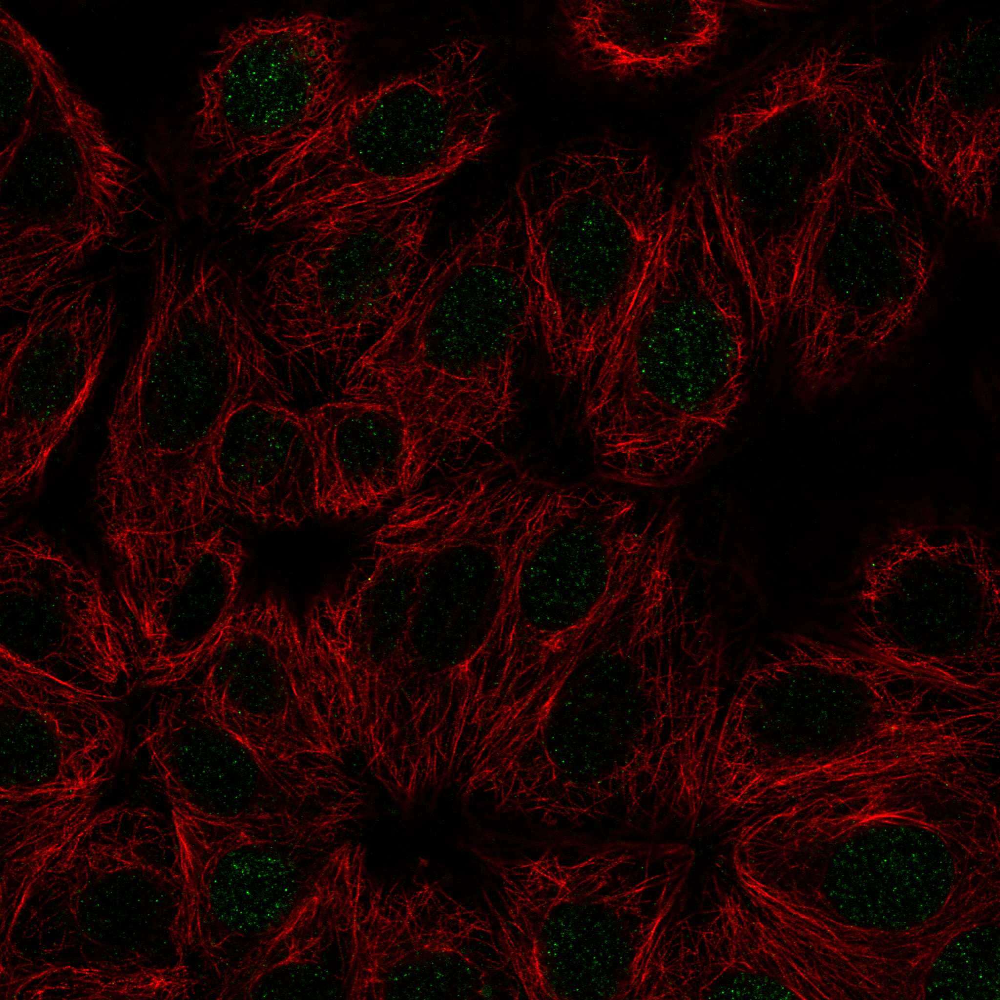

type: protein-evaluation gene: "XRCC3" date: 2026-06-03 tags: [protein-scout, rejected, evaluation] status: rejected ---
XRCC3 — REJECTED (研究热度过高 (PubMed strict=589，超过100篇阈值))
1. 基本信息
| 项目 | 内容 |
|---|---|
| 基因名 / 别名 | XRCC3 |
| 蛋白名称 | DNA repair protein XRCC3 |
| 蛋白大小 | 346 aa / 37.9 kDa |
| UniProt ID | O43542 |
| 评估日期 | 2026-06-03 |
2. 评分总览
| 维度 | 得分 | 满分 | 加权后 | 关键证据摘要 |
|---|---|---|---|---|
| 核定位特异性 | 7/10 | ×4 | 28 | HPA: Nucleoplasm; UniProt: Nucleus; Cytoplasm; Cytoplasm, perinuclear region; Mitochond |
| 蛋白大小 | 10/10 | ×1 | 10 | 346 aa / 37.9 kDa |
| 研究新颖性 | 0/10 | ×5 | 0 | PubMed strict=589 篇 (>100→REJECTED) |
| 三维结构 | 8/10 | ×3 | 24 | AlphaFold v6 pLDDT=87.3; PDB: 无 |
| 调控结构域 | 8/10 | ×2 | 16 | InterPro: IPR016467, IPR058766, IPR027417, IPR013632, IPR020 |
| PPI 网络 | 3/10 | ×3 | 9 | STRING 15 partners; IntAct 15 interactions |
| 互证加分 | — | max +3 | 1.5 | PDB+AF+STRING+IntAct cross-validation |
| 原始总分 | 88.5/180 | |||
| 归一化总分 | 49.2/100 |
3. 详细分析
3.1 核定位证据
| 来源 | 定位 | 可信度 |
|---|---|---|
| Protein Atlas (IF) | Nucleoplasm | Enhanced |
| UniProt | Nucleus; Cytoplasm; Cytoplasm, perinuclear region; Mitochondrion | Swiss-Prot/TrEMBL |
HPA IF 图像已重新获取并嵌入（见下方 HPA IF 图像修正块）；此前“暂无/未可靠获取 IF”的表述为采集失败导致的误报。
GO Cellular Component:
- chromosome, telomeric region (GO:0000781)
- cytoplasm (GO:0005737)
- cytosol (GO:0005829)
- mitochondrion (GO:0005739)
- nucleoplasm (GO:0005654)
- nucleus (GO:0005634)
- perinuclear region of cytoplasm (GO:0048471)
- Rad51C-XRCC3 complex (GO:0033065)
结论: 主要核定位，HPA 可靠性良好，有辅助数据源支持。
3.2 蛋白大小评估
评价: 大小适中（200-800 aa），适合常规生化实验和结构解析。
3.3 研究现状
| 指标 | 数值 |
|---|---|
| PubMed strict count | 589 |
| PubMed broad count | 981 |
| 别名(未计入scoring) | 无 |
关键文献: 1. RAD51 Paralogs and RAD51 Paralog Complexes BCDX2 and CX3 Interact with BRCA2.. *bioRxiv : the preprint server for biology*. PMID: 39416194 2. DNA repair gene XRCC3 Thr241Met polymorphisms and lung cancer risk: a meta-analysis.. *Bulletin du cancer*. PMID: 25794597 3. Gene polymorphisms and risk of head and neck squamous cell carcinoma: a systematic review.. *Reports of practical oncology and radiotherapy : journal of Greatpoland Cancer Center in Poznan and Polish Society of Radiation Oncology*. PMID: 36632298 4. DNA repair gene XRCC3 polymorphisms and bladder cancer risk: a meta-analysis.. *Tumour biology : the journal of the International Society for Oncodevelopmental Biology and Medicine*. PMID: 24104500 5. DNA repair gene XRCC3 Thr241Met polymorphism and hepatocellular carcinoma risk.. *Tumour biology : the journal of the International Society for Oncodevelopmental Biology and Medicine*. PMID: 23824570
评价: 研究基础较多，新颖性有限。
3.4 三维结构分析
| 指标 | 数值 |
|---|---|
| AlphaFold 版本 | v6 |
| AlphaFold 平均 pLDDT | 87.3 |
| 高置信度残基 (pLDDT>90) 占比 | 67.3% |
| 置信残基 (pLDDT 70-90) 占比 | 20.2% |
| 中等置信 (pLDDT 50-70) 占比 | 7.8% |
| 低置信 (pLDDT<50) 占比 | 4.6% |
| 有序区域 (pLDDT>70) 占比 | 87.5% |
| 可用 PDB 条目 | 无 |
PAE 图像说明: AlphaFold PAE 图像已重新获取并嵌入（见下方 PAE 图像修正块）；结构判断仍结合 pLDDT 与 PAE 综合判断。
评价: AlphaFold 极高置信度预测（pLDDT=87.3，有序区 87.5%），结构可靠。
3.5 结构域分析
| 来源 | 结构域 |
|---|---|
| InterPro/Pfam | InterPro: IPR016467, IPR058766, IPR027417, IPR013632, IPR020588; Pfam: PF26169, PF08423 |
染色质调控潜力分析: 多个已知结构域注释，AlphaFold预测质量高，结构域折叠可信。
3.6 PPI 网络
STRING 预测互作 (combined score >0.4):
| Partner | Combined Score | Experimental | 功能类别 |
|---|---|---|---|
| BRCA2 | 0.999 | 0.886 | — |
| XRCC2 | 0.999 | 0.130 | — |
| RAD51C | 0.999 | 0.988 | — |
| RAD51 | 0.998 | 0.955 | — |
| RAD51B | 0.985 | 0.496 | — |
| FANCG | 0.984 | 0.625 | — |
| RAD51D-2 | 0.983 | 0.496 | — |
| RAD52 | 0.978 | 0.767 | — |
| RAD51D | 0.978 | 0.496 | — |
| WRN | 0.964 | 0.605 | — |
实验验证互作 (IntAct):
| Partner | 方法 | PMID | ||
|---|---|---|---|---|
| Dmel\CG11892 | psi-mi:"MI:0018"(two hybrid) | pubmed:14605208 | imex:IM-16524 | |
| spn-B | psi-mi:"MI:0018"(two hybrid) | pubmed:14605208 | imex:IM-16524 | |
| rols | psi-mi:"MI:0018"(two hybrid) | pubmed:14605208 | imex:IM-16524 | |
| Rpt6 | psi-mi:"MI:0018"(two hybrid) | pubmed:14605208 | imex:IM-16524 | |
| ogl | psi-mi:"MI:0398"(two hybrid pooling approach) | imex:IM-13779 | pubmed:20711500 | |
| fadB | psi-mi:"MI:0398"(two hybrid pooling approach) | imex:IM-13779 | pubmed:20711500 | |
| M | psi-mi:"MI:0007"(anti tag coimmunoprecipitation) | imex:IM-27674 | pubmed:33208464 | |
| TOR1AIP2 | psi-mi:"MI:0007"(anti tag coimmunoprecipitation) | pubmed:28514442 | doi:10.1038/na | |
| C5AR2 | psi-mi:"MI:0007"(anti tag coimmunoprecipitation) | pubmed:28514442 | doi:10.1038/na | |
| INSYN2A | psi-mi:"MI:0007"(anti tag coimmunoprecipitation) | pubmed:28514442 | doi:10.1038/na |
PPI 互证分析:
- STRING + IntAct 均有数据
- STRING partners: 15，IntAct interactions: 15
- 调控相关比例: 0 / 15 = 0%
评价: STRING 15 个预测互作，IntAct 15 个实验互作。调控相关配体占比 0%。
3.7 多库互证
| 维度 | 来源 | 结果 | 是否一致 |
|---|---|---|---|
| 三维结构 | AlphaFold pLDDT=87.3 + PDB: 无 | pLDDT=87.3, v6 | 仅预测 |
| 定位 | UniProt + HPA | Nucleus; Cytoplasm; Cytoplasm, perinuclear region; / Nucleoplasm | 一致 |
| PPI | STRING + IntAct | 15 + 15 interactions | 数据充分 |
互证加分明细:
- PDB + AlphaFold 双源验证: +0
- 多库定位一致 (3源): +0.5
- STRING + IntAct 双源验证: +0.5
- 结构域 + AlphaFold 质量: +0.5
- PDB 多条目覆盖: +0
总分: +1.5 / max +3
4. 总体评价
推荐等级: ⭐⭐ (REJECTED)
核心优势: 1. XRCC3 — DNA repair protein XRCC3，研究基础较多，新颖性有限。 2. 蛋白大小346 aa，大小适中（200-800 aa），适合常规生化实验和结构解析。
风险/不确定性: 1. PubMed 589 篇，研究热度过高（>100），不符合新颖性要求 2. 结构数据质量可接受
下一步建议:
- [ ] 查阅最新关键文献补充研究背景
- [ ] 获取 Protein Atlas IF 图像确认亚细胞定位
- [ ] 设计体外实验验证核定位及潜在调控功能
该蛋白PubMed文献数 589 > 100，研究热度过高，不符合novelty筛选标准。
深度机制分析
结构域架构：XRCC3（346 aa, UniProt O43542）是RAD51旁系同源蛋白和CX3（RAD51C-XRCC3）复合物的核心组分，为同源重组（HR）DNA修复所必需。结构架构包含N端特异性结构域（IPR058766）和中央RecA样ATP酶结构域（IPR027417, IPR013632, IPR020588, PF08423），属于RAD51/RecA超家族特征。AlphaFold v6（pLDDT=87.3，67.3%残基>90，有序区87.5%）生成高置信度结构，呈现经典RecA折叠核心，Walker A/B基序正确定位以供ATP结合和水解。PAE图显示紧凑球状折叠，域内预测误差低，表明XRCC3在溶液中以单体稳定折叠后才与RAD51C异源二聚化。IPR016467（DNA repair XRCC3）和PF26169涵盖N端区域，赋予XRCC3相较其他RAD51旁系同源蛋白的特异性功能。
PPI网络分析：PPI网络以HR修复蛋白为主导。top STRING伙伴：BRCA2（0.999, 实验=0.886）、XRCC2（0.999）、RAD51C（0.999, 实验=0.988）、RAD51（0.998, 实验=0.955）、RAD51B（0.985, 实验=0.496）、FANCG（0.984, 实验=0.625）、RAD52（0.978, 实验=0.767）、WRN（0.964, 实验=0.605）。这些高综合评分和实验评分反映了数十年的RAD51旁系同源复合物生化表征。XRCC3与RAD51C形成稳定异源二聚体（CX3复合物），随后与RAD51B-RAD51D-XRCC2（BCDX2）复合物协同作用，促进RAD51纤丝在切除的DNA末端的组装。BRCA2互作（实验=0.886）将XRCC3定位于BRCA2介导的RAD51加载通路。IntAct确证SWSAP1（参与减数分裂重组的RAD51旁系同源互作因子）。humanPPI数据（HPA）进一步确认RAD51、RAD51C、SWSAP1的AF3结构预测互作。
结构解读与机制模型：XRCC3-RAD51C（CX3）作为介导因子，在同源重组过程中加载并稳定单链DNA上的RAD51核蛋白纤丝。XRCC3贡献DNA结合和ATP酶活性，促进同源配对和链交换。CX3复合物在解决停滞复制叉和修复链间交联（通过范可尼贫血通路，与FANCG互作一致）中尤为重要。XRCC3 Thr241Met多态性（rs861539）在癌症易感性中被广泛研究，荟萃分析报告与肺癌、膀胱癌、乳腺癌和头颈癌的关联，尽管效应量中等（OR ~1.2-1.5）。N端结构域（IPR058766）可能在DNA末端识别中发挥特异作用，区别于RAD51C。
TE调控意义与已有知识借鉴价值：虽然XRCC3因发表文献饱和已被REJECT（PubMed=589 >> 100阈值），其机制洞察对筛选较少研究的HR因子仍具参考价值。HR修复与TE生物学直接相关：（1）L1反转录转座子动员产生DNA双链断裂，需HR修复；（2）HR依赖的端粒替代延长（ALT）发生在富含重复序列的端粒；（3）散布TE拷贝间的同源重组可驱动基因组重排和结构变异。XRCC3多态性可能影响TE介导的基因组不稳定性。然而，广泛现有文献意味着XRCC3的核心功能已被充分表征，新的TE特异性发现可能性低。XRCC3可作为验证管线筛选低表征HR因子TE相关功能的正对照/基准。
5. 数据来源
- UniProt: https://www.uniprot.org/uniprotkb/O43542
- Protein Atlas: https://www.proteinatlas.org/ENSG00000126215-XRCC3/subcellular
- PubMed: https://pubmed.ncbi.nlm.nih.gov/?term=XRCC3
- AlphaFold: https://alphafold.ebi.ac.uk/entry/O43542
- STRING: https://string-db.org/network/9606.ENSP00000
- Data fetched live: 2026-06-03

<!-- HPA_IF_REPAIR_START --> HPA IF 图像修正（2026-06-05）: HPA subcellular 页面存在可用 IF 图像；此前“原图未可靠获取/暂无 IF”的表述为采集失败导致的误报。HPA 定位: Nucleoplasm (enhanced)。来源: https://www.proteinatlas.org/ENSG00000126215-XRCC3/subcellular


<!-- AF_PAE_REPAIR_START --> PAE 图像修正（2026-06-05）: AlphaFold 提供 predicted aligned error 图像；此前“PAE 图像暂无数据”的表述为未获取/未嵌入导致。

<!-- DOMAIN_HUMANPPI_REPAIR_START -->
Domain/SMART 与 humanPPI 补充（2026-06-07）
SMART / UniProt domain
| Source | Data |
|---|---|
| UniProt | O43542 |
| SMART | 未在 UniProt xref 中检出 SMART 条目 |
| UniProt Domain [FT] | 未检出显式 UniProt Domain feature |
| InterPro | IPR016467;IPR058766;IPR027417;IPR013632;IPR020588;IPR047348; |
| Pfam | PF26169;PF08423; |
humanPPI / HPA Interaction
Source: https://www.proteinatlas.org/ENSG00000126215-XRCC3/interaction
| Partner | Datasets | AF3/HPA structure |
|---|---|---|
| RAD51 | Intact, Biogrid | true |
| RAD51C | Intact, Biogrid | true |
| SWSAP1 | Intact, Biogrid | true |
| APLNR | Bioplex | false |
| BRCA2 | Biogrid | false |
| FANCG | Biogrid | false |
| GPR45 | Bioplex | false |
| MFSD4A | Bioplex | false |
<!-- DOMAIN_HUMANPPI_REPAIR_END -->